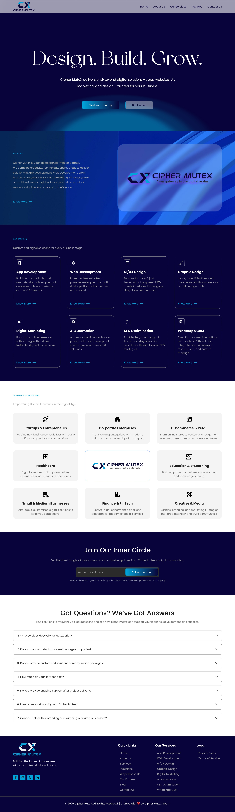
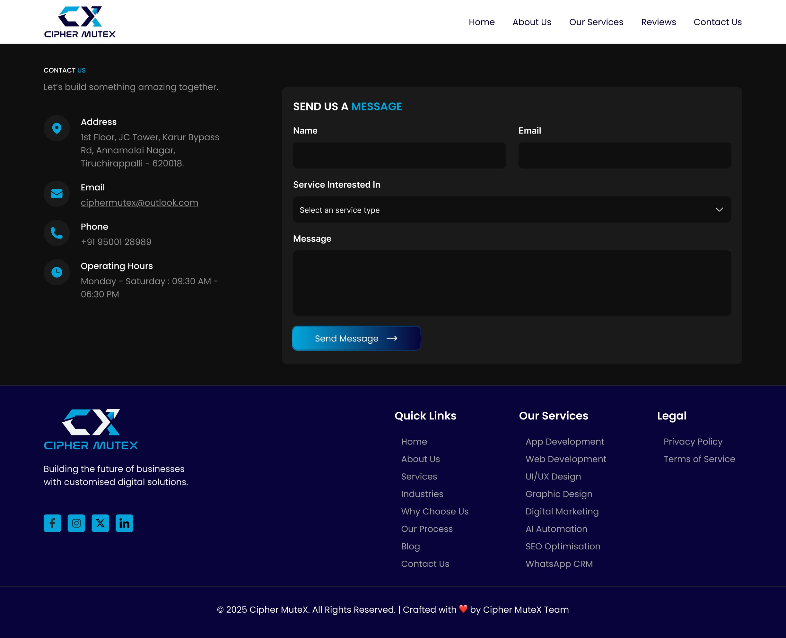
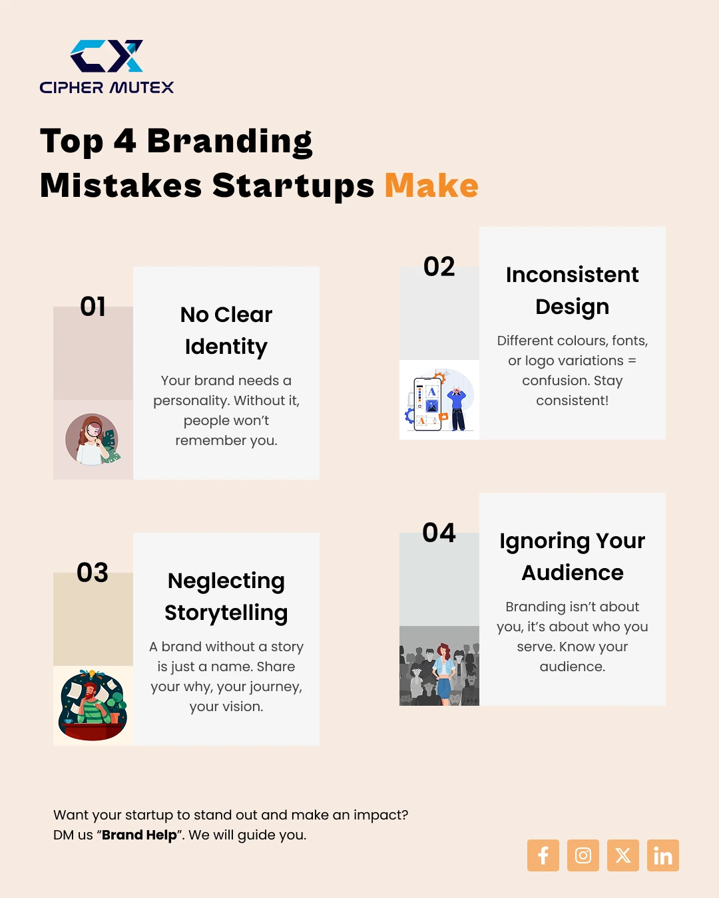
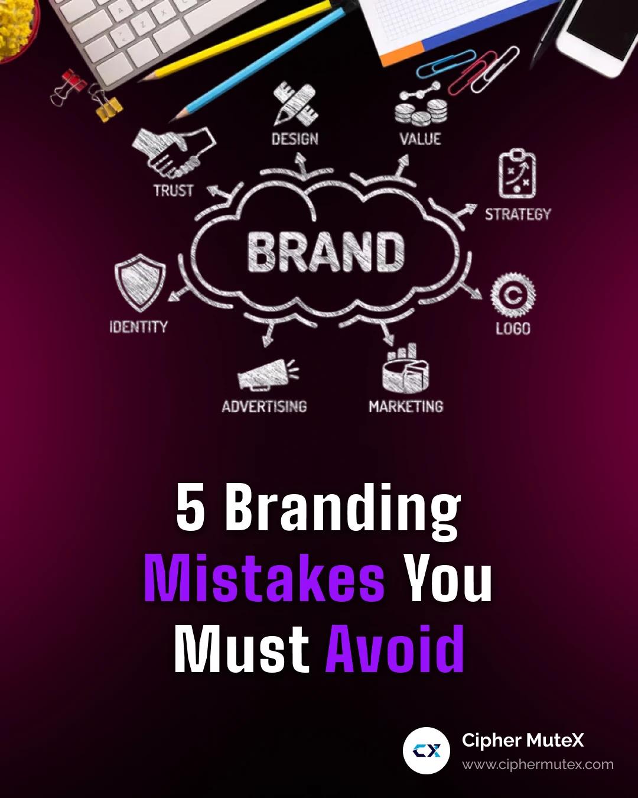

Digital design
Website ui, ui/ux design and digital product interfaces.
Building a digital identity for a technology company.
A website and visual communication project focused on presenting a technology company's services, strengthening its digital presence and creating a consistent brand experience across multiple touchpoints.

The challenge was to bring a growing set of technology services under one clear and recognisable digital identity.
CipherMutex provides digital solutions to businesses, from website and application development to branding, marketing and automation. As its services expanded, communicating the company's capabilities through a clear and consistent digital experience became increasingly important.
The website needed to do more than introduce the company. It needed to explain what CipherMutex does, showcase its capabilities, establish credibility and help potential clients understand how its services could support their businesses.
My responsibility extended beyond individual interface screens. I worked across the company's website, visual identity applications, marketing creatives and corporate communication materials.
Different services addressed different business needs, but they all had to feel like part of the same brand.
How might we communicate a diverse set of digital services clearly, while maintaining a strong and recognisable brand identity?
A technology-driven appearance with an approachable brand personality.
I explored technology-focused websites, creative agency layouts, typography combinations, colour systems and visual compositions. I also considered how visitors discover services, understand capabilities and move towards contacting the company.
The direction balanced four priorities: clear content hierarchy, intuitive navigation, a confident visual language and consistency across the company's communication materials.
I started with the sitemap, organised the content and then moved into wireframes and high-fidelity ui design in Figma.
Review the company's services, audience and communication needs.
Plan the sitemap, page relationships and content hierarchy.
Establish section structure, navigation and information flow.
Develop the visual interface in Figma and carry the design into a published website.
The planned experience brought together the Home, About, Services and Contact areas. The homepage introduced the company, presented its capabilities, built confidence through its work and guided visitors towards an enquiry.
Each section had a communication purpose, from the first impression to the final contact action.

Hero: Establish the company's identity and communicate what it does immediately.
About: Introduce the company, its capabilities and its approach to digital solutions.
Services: Present each capability through clear titles, organised content and supporting descriptions.
Work & expertise: Demonstrate the type of work the company can deliver.
Contact: Make the next step clear for visitors who want to start a conversation.
The website was one part of a wider design responsibility across the company's digital and corporate touchpoints.
I worked across graphic design, brand applications, corporate communication and social media content. Moving between these formats reinforced the importance of a consistent visual language, even when the design requirements changed.


Website ui, ui/ux design and digital product interfaces.
Social media posters, promotional creatives, brochures and marketing materials.
Branding assets, business cards, id cards, calendars and corporate documents.
Offer letters, certificates, invoices, quotations, promotional videos and reels.
The recurring design challenge was to balance different audiences, service categories and communication formats without fragmenting the brand.
Approach: Establish a unified visual direction and organise services into clear categories.
Approach: Prioritise clear content, approachable messaging and structured service descriptions.
Approach: Apply a consistent palette, typography direction and reusable visual principles.
Approach: Pair expressive visual elements with readable content, clear hierarchy and purposeful layouts.
The website moved beyond the design stage and was developed and published.
The project brought together website design, visual communication and brand consistency under one direction. My contribution extended across the company's website, service presentation, visual identity applications, marketing creatives, corporate communication and social content.
A company's digital identity is shaped by every interaction, every visual element and every communication point that represents the brand.
CipherMutex helped me develop a broader understanding of how design operates within a growing technology company. It strengthened my ability to understand business needs, translate them into structured experiences and move between different design disciplines while maintaining a consistent visual approach.
Good design isn't just about making a company look professional. It's about helping people understand what the company stands for, what it offers and why it matters.
Explore selected collections of work created across CipherMutex's visual and digital touchpoints.
A broader brand experience shaped through website design, visual communication and a consistent digital presence.